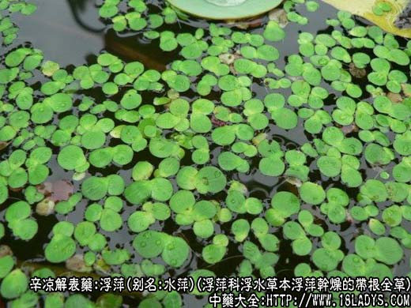
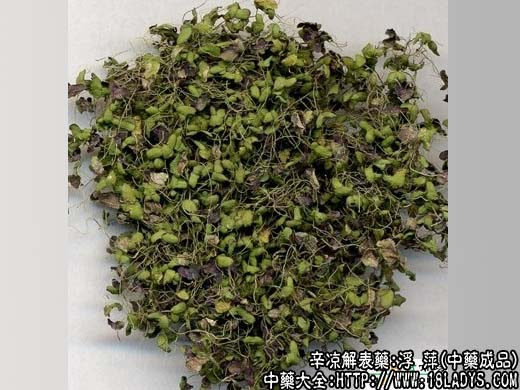
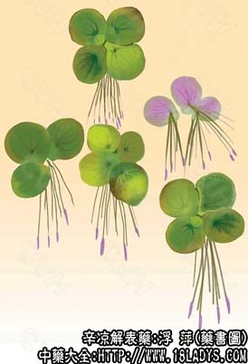

浮萍为常用中药。《神农本草经》列为中品。原名水萍。
别名：水萍、紫背浮萍、青萍。
来源：为浮萍科浮水细小草本植物紫萍和浮萍干燥的带根全草。野生。
产地：全国各地池沼中均产。
性状鉴别：1、紫萍。叶状体类圆形，直径3～6毫米，多单一或2～3片并在一起。表面灰绿色，背面棕绿至紫棕色，表面偏侧有一小凹陷，背面该处生有3～6条须根，根长1～2厘米（大部分已脱落），质松软易碎。气微味咸。
2、浮萍（绿背浮萍），叶状体，两面绿色，根单一。以背面紫色，无泥土杂质者为佳。但二种经常混在一起。
主要成分：主含荭草素、牡荆素、亚麻酸等。
功效与作用：发汗、祛风、行水。
1、解热：动物实验证实其煎剂和浸剂有微软的解热作用。
性味：辛寒。
归经：入肺、膀胱经。
功能：发表透疹，利水退肿。
主治：感冒发烧，斑疹不透，肌肤肿胀，小便不利。
临床应用：主要用于透疹。麻疹隐隐不出，或疹出不透，发热而无汗，无其他合并症者可用。内服、外洗均可。有汗而体虚者不宜用。亦可用于荨麻疹止痒。
用量：内服：干品3～6g，鲜品9～18g，外用：适量。
处方举例：浮萍6g，煎水当茶，一日分数次服。
附注：广东、广西用的浮萍是浮水草本天南星科植物大薸。它与全国大部分地区用的浮萍不同，易于同区别。